LIGHTNING
| Photo |
Name |
Number |
Position |
Shot |
Height |
Weight |
Birthday |
Hometown |
| 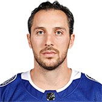 |
Ryan Callahan |
24 |
RW |
R |
5' 10" |
187 |
Mar 21, 1985 |
Rochester, NY, USA |
| 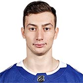 |
Anthony Cirelli |
71 |
C |
L |
6' 0" |
180 |
Jul 15, 1997 |
Etobicoke, ON, CAN |
| 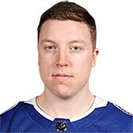 |
Adam Erne |
73 |
LW |
L |
6' 1" |
214 |
Apr 20, 1995 |
New Haven, CT, USA |
| 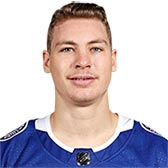 |
Yanni Gourde |
37 |
C |
L |
5' 9" |
172 |
Dec 15, 1991 |
Saint-Narcisse, QC, CAN |
| 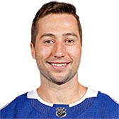 |
Tyler Johnson |
9 |
C |
R |
5' 8" |
183 |
Jul 29, 1990 |
Spokane, WA, USA |
| 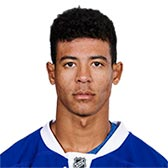 |
Mathieu Joseph |
7 |
RW |
L |
6' 1" |
190 |
Feb 9, 1997 |
Laval, QC, CAN |
| 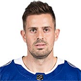 |
Alex Killorn |
17 |
LW |
L |
6' 1" |
196 |
Sep 14, 1989 |
Halifax, NS, CAN |
| 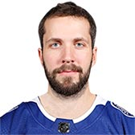 |
Nikita Kucherov |
86 |
RW |
L |
5' 11" |
178 |
Jun 17, 1993 |
Maykop, RUS |
| 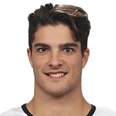 |
Danick Martel |
62 |
LW |
L |
5' 8" |
162 |
Dec 12, 1994 |
Drummondville, QC, CAN |
| 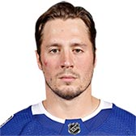 |
J.T. Miller |
10 |
C |
L |
6' 1" |
218 |
Mar 14, 1993 |
East Palestine, OH, USA |
| 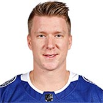 |
Ondrej Palat |
18 |
LW |
L |
6' 0" |
188 |
Mar 28, 1991 |
Frydek-Mistek, CZE |
| 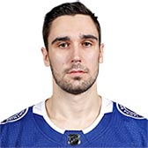 |
Cedric Paquette |
13 |
C |
L |
6' 1" |
198 |
Aug 13, 1993 |
Gaspe, QC, CAN |
| 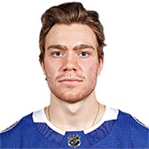 |
Brayden Point |
21 |
C |
R |
5' 10" |
166 |
Mar 13, 1996 |
Calgary, AB, CAN |
| 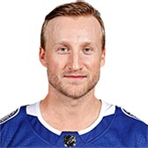 |
Steven Stamkos |
91 |
C |
R |
6' 1" |
194 |
Feb 7, 1990 |
Markham, ON, CAN |
| Photo |
Name |
Number |
Shot |
Height |
Weight |
Birthday |
Hometown |
| 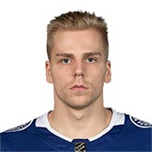 |
Erik Cernak |
81 |
R |
6' 4" |
225 |
May 28, 1997 |
Kosice, SVK |
|
Braydon Coburn |
55 |
L |
6' 5" |
223 |
Feb 27, 1985 |
Shaunavon, SK, CAN |
| 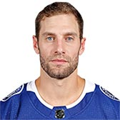 |
Dan Girardi |
5 |
R |
6' 1" |
212 |
Apr 29, 1984 |
Welland, ON, CAN |
| 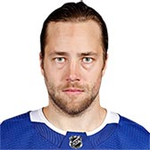 |
Victor Hedman |
77 |
L |
6' 6" |
223 |
Dec 18, 1990 |
Ornskoldsvik, SWE |
| 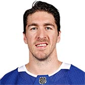 |
Ryan McDonagh |
27 |
L |
6' 1" |
215 |
Jun 13, 1989 |
St. Paul, MN, USA |
| 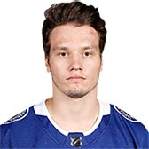 |
Mikhail Sergachev |
98 |
L |
6' 3" |
215 |
Jun 25, 1998 |
Nizhnekamsk, RUS |
| 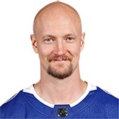 |
Anton Stralman |
6 |
R |
5' 11" |
190 |
Aug 1, 1986 |
Tibro, SWE |
| Photo |
Name |
Number |
Height |
Weight |
Birthday |
Hometown |
| 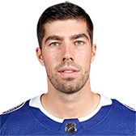 |
Louis Domingue |
70 |
6' 3" |
210 |
Mar 6, 1992 |
St-Hyacinthe, QC, CAN |
| 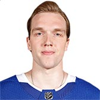 |
Andrei Vasilevskiy |
88 |
6' 3" |
207 |
Jul 25, 1994 |
Tyumen, RUS |